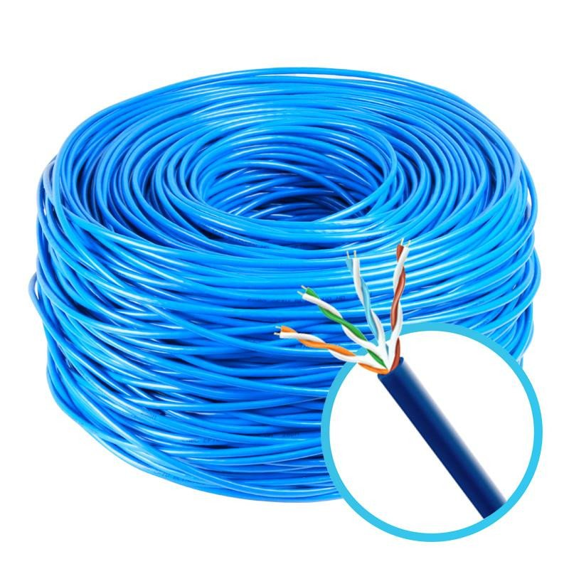
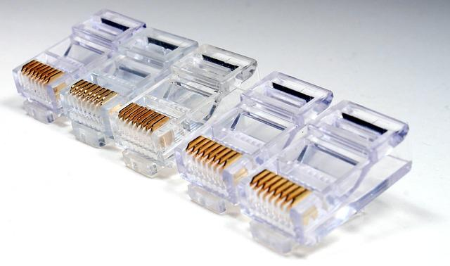
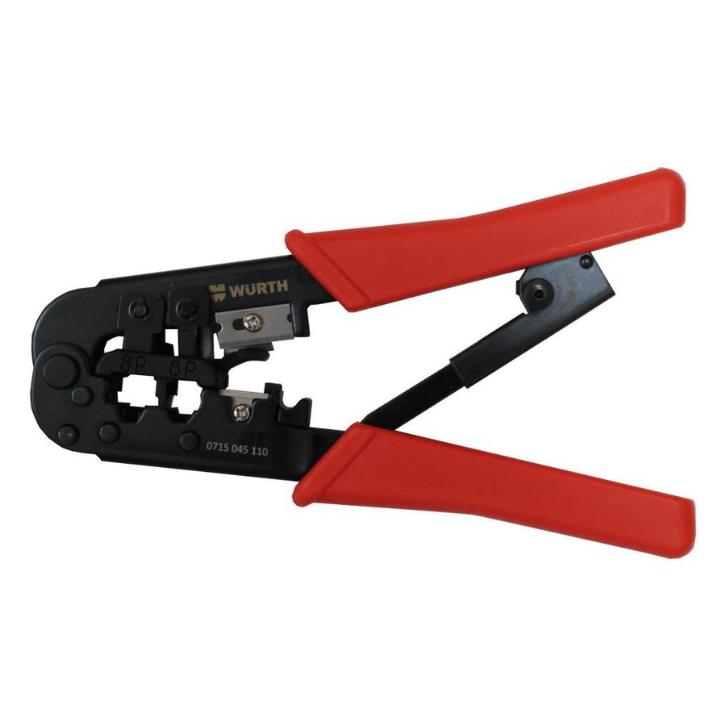
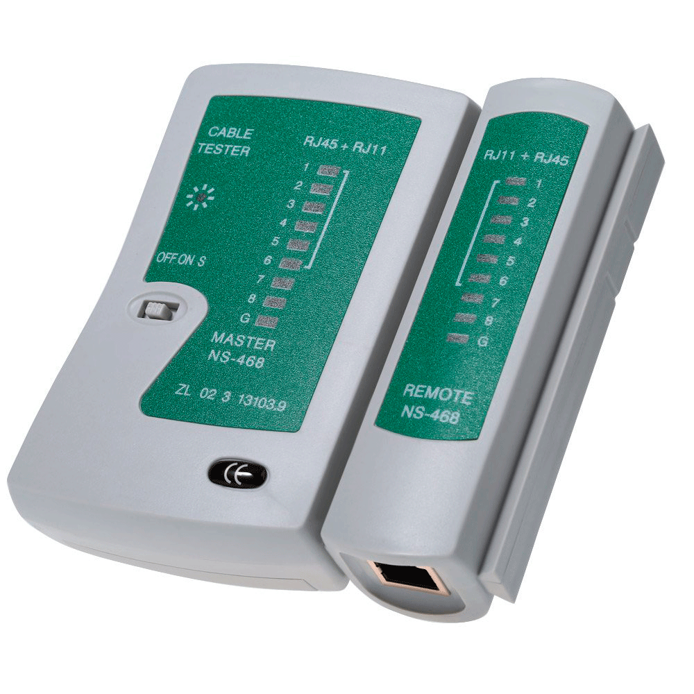

Componentes utilizado
Cabos de Rede
Os cabos de rede são hardwares de rede utilizados para interconectar dispositivos para que ocorra a troca de informação entre os mesmos.
Cabeça de Cabo Ethernet Cat6 Rj45
É um protocolo ou conjunto de regras de comunicação para comunicação entre cliente e servidor. Quando você visita um site, o navegador envia uma solicitação HTTP ao servidor Web.
Alicate de Crimpagem
O alicate de crimpagem Need-L-Lock é uma ferramenta “quatro-em-um” que combina uma crimpadora UR/UY/UG, um alicate de bico fino e um desencapador/cortador de fios.
Testador de Cabo de Rede RJ45
Seu principal objetivo é testar todos os seus fios para garantir que eles estejam conectados corretamente e funcionando corretamente, fornecendo corrente através deles e verificando a conectividade em seus terminais, o que indicará se eles estão conectados ou quebrados.
